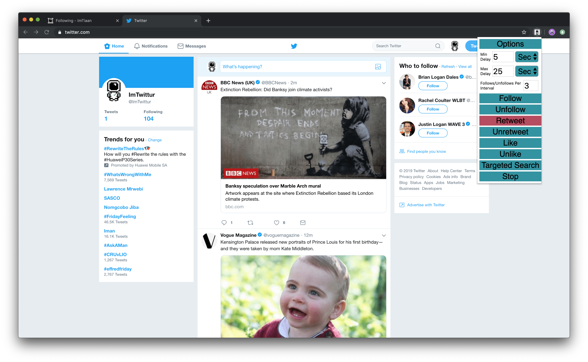

Incomplete Post
Chrome
Extension
HTML
JavaScript
Last updated on April 27, 2019
Basic Useage
High Quality Following
Lets take a look at Gordon’s profile page, in particular, his Following and Followers are at 35,6k and 7.06m respectively. That gives me the impression that he is reasonably selective of the accounts he follows, which is important for out next step:

From here, you’ll want to navigate to his Following section. This step is all about balancing the content of the retweets that we’ll automate later. (If your profile has already got a good selection of high quality accounts that it’s following, you can skip this step)

Next, click on the extension and set up your parameters. Remember: I set mine to 5s, 25s, and 3/interval
Finally, and while still on this page, select “Follow” from within the extension.

You’ll notice two things in the above the first is the popup that counts your actions and the second is that on the bottom left, I had not turned on the option to ignore the “Who to follow” section.
The extension will now follow 51 accounts and then present you with a popup.
This is purely to limit and randomize the time taken between each interval. You can repeat this process twice and then stop at around 100 accounts for now.
I now can navigate to my page and can see that im following 104 accounts now.
Create a Baseline
Again, if you already have a tweet history, you don’t need to worry about this step.
Navigate Home
Click on the extension and choose Retweet

The extension will now retweet the top 51 tweets in your feed.
The reason for this is to generate some tweet history from popular accounts to legitimize the account.

As you can see, the extension handles the retweet process automatically.
Engageable Followers
These are the followers that are more likely to follow you back if you follow them and interact with their account a little.
I now go to Gordons Followers and repeat the process again.
The limit will still be 51 actions per session, and I recommend doing it 3-4 times.
Once you reach your daily limit, Twitter will let you know you’ve reached your limit. Be wary of hitting these limits too often!